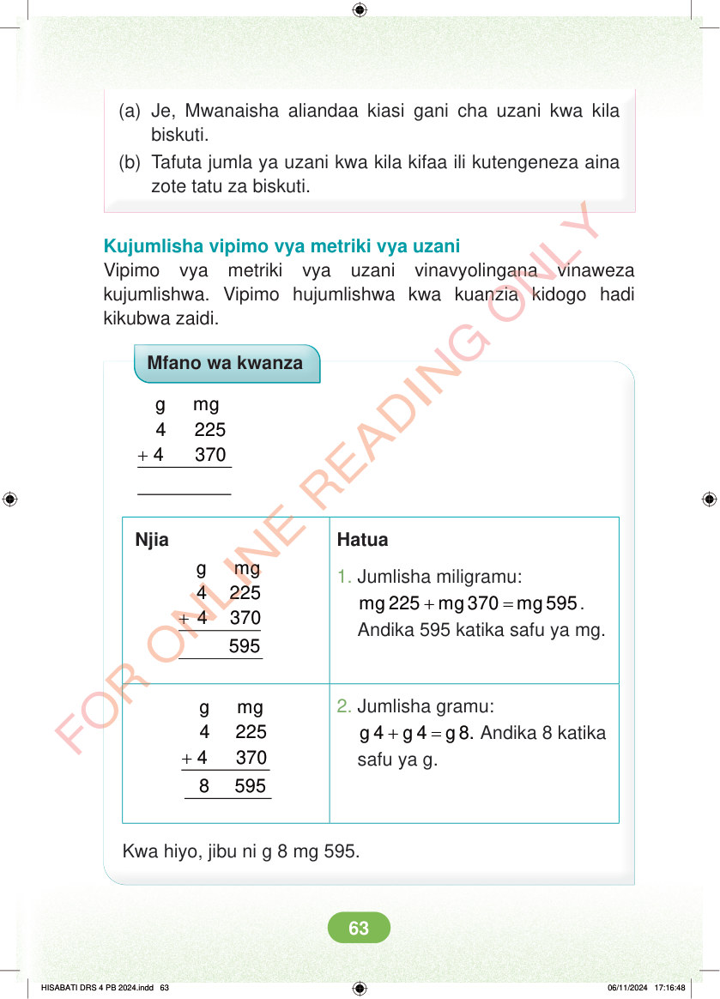

<!DOCTYPE html>
<html lang="sw-TZ"><head><meta charset="utf-8"><meta name="viewport" content="width=device-width,initial-scale=1">
<title>Hisabati: Kitabu cha Mwanafunzi Darasa la Nne</title>
<meta name="title-id" content="pg069_sec001"><meta name="page-section-id" content="72">
<link href="./content/tailwind_output.css" rel="stylesheet"><link href="./assets/libs/fontawesome/css/all.min.css" rel="stylesheet"><link href="./assets/fonts.css" rel="stylesheet">
<style>body{margin:0;background:#eef1ed}main{width:100%;display:flex;justify-content:center;padding:1rem 1rem 5rem;box-sizing:border-box}#content{width:100%;display:flex;justify-content:center}.pdf-page{position:relative;width:min(calc(100vw - 2rem),56rem);aspect-ratio:540.8980102539062/750.6610107421875;background:white;box-shadow:0 4px 24px #0002;overflow:hidden}.pdf-page img{position:absolute;inset:0;width:100%;height:100%;object-fit:fill}</style>
</head><body><main><h1 class="sr-only" id="page-heading">Ukurasa wa 69</h1><div id="content" class="opacity-0"><section role="article" data-section-type="pdf_accessible_page" data-section-id="pg069_sec001" aria-labelledby="page-heading" class="pdf-page"><p class="sr-only" data-id="pg069_gp001_tx001">(a) Je, Mwanaisha aliandaa kiasi gani cha uzani kwa kila biskuti. (b) Tafuta jumla ya uzani kwa kila kifaa ili kutengeneza aina zote tatu za biskuti. Kujumlisha vipimo vya metriki vya uzani Vipimo vya metriki vya uzani vinavyolingana vinaweza kujumlishwa. Vipimo hujumlishwa kwa kuanzia kidogo hadi kikubwa zaidi. Mfano wa kwanza + g mg 4 225 4 370 Njia Hatua + g mg 4 225 4 370 1. Jumlisha miligramu: + = mg 225 mg 370 mg 595. Andika 595 katika safu ya mg. + g mg 4 225 4 370 2. Jumlisha gramu: + = g 4 g 4 g 8. Andika 8 katika safu ya g. 8 595 Kwa hiyo, jibu ni g 8 mg 595. HISABATI DRS 4 PB 2024.indd 63 HISABATI DRS 4 PB 2024.indd 63 06/11/2024 17:16:48 06/11/2024 17:16:48</p></section></div></main><div class="relative z-50" id="interface-container"></div><div class="relative z-50" id="nav-container"></div><script src="./assets/offline-preloader.js?v=audiofix-20260824-1"></script><script src="./assets/scorm.js"></script><script src="./assets/base.bundle.local.js?v=audiofix-20260824-1"></script></body></html>